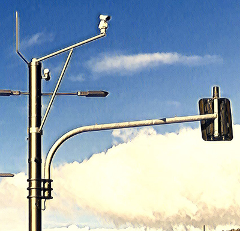
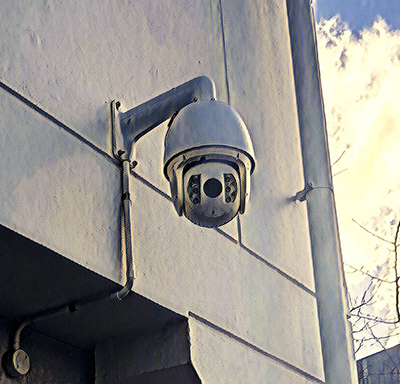

Traffic Cameras
Traffic cameras are everywhere on the roads of every country. It's records can improve the efficiency of the local transportation department, remind travelers to choose the right route, and deal with accidents on time.

Public Cameras
Public areas are where people flow the most, and monitoring is essential. Although the usual surveillance camera gives people an uncomfortable feeling, it can transmit information to the opposite department through the network at the first time to provide effective information.

Private Cameras
Most individuals and stores are now paying more and more attention to safety, so we can see many personal monitors appearing. Most concealed cameras connect to a broader network for security systems in individual buildings.